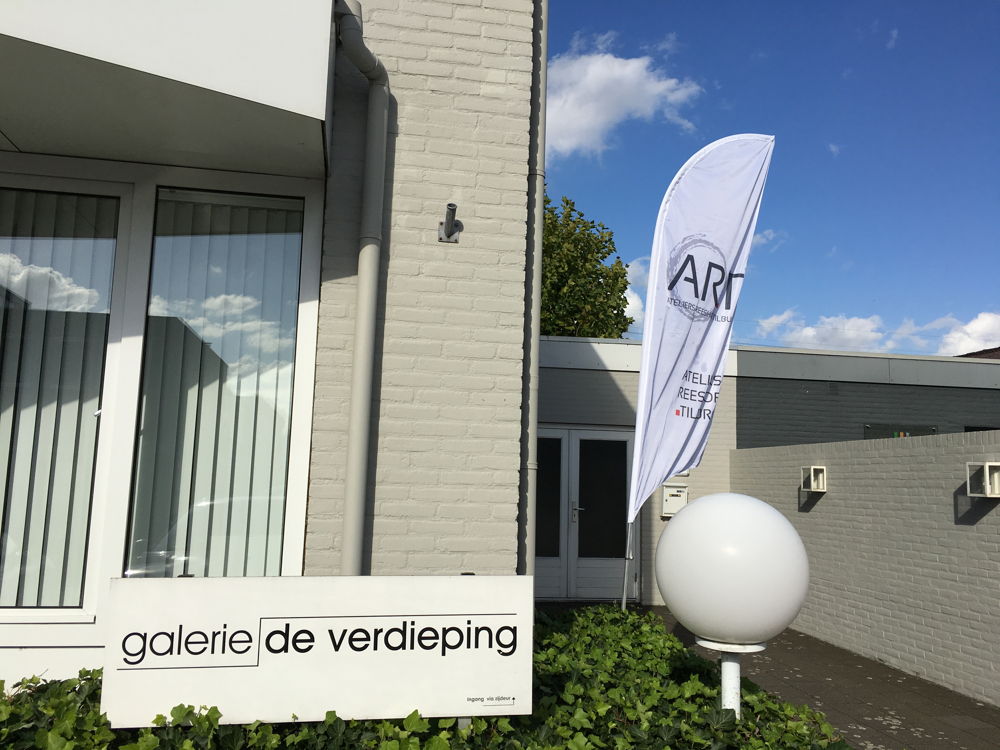
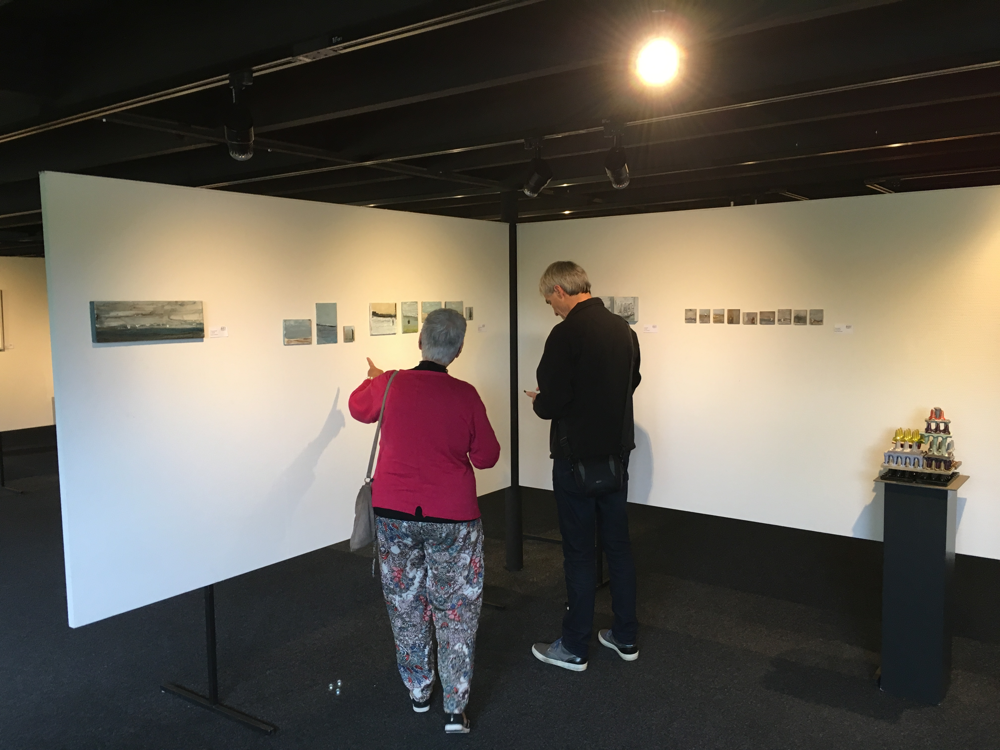
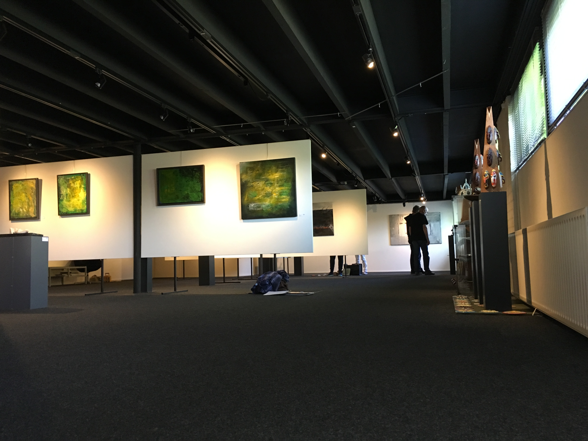
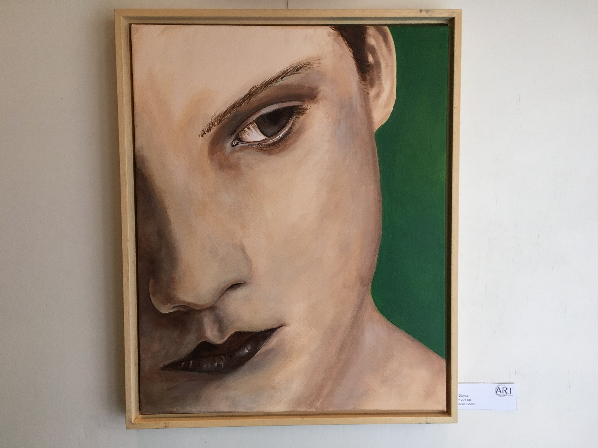
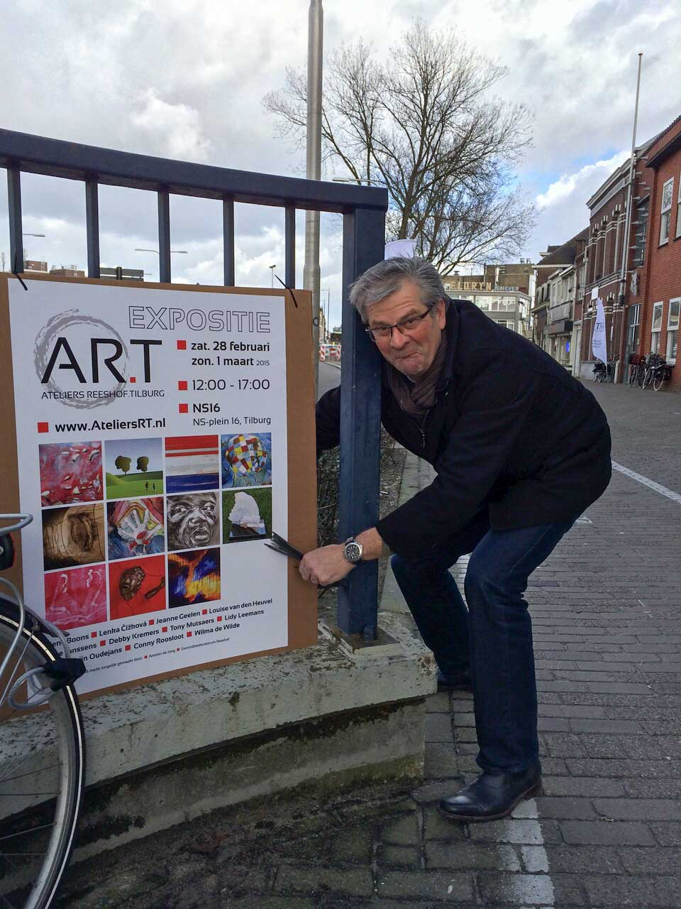
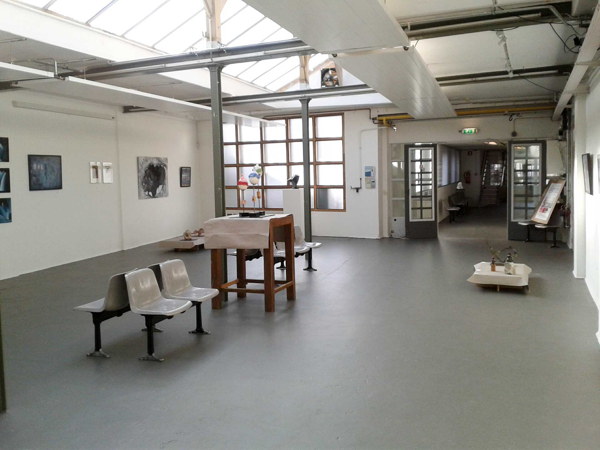
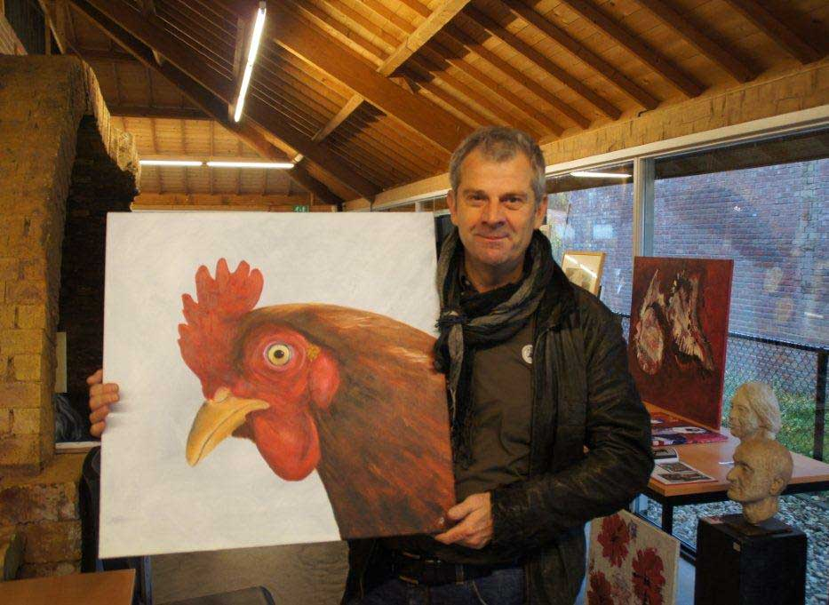

Galerie De Roos - Tilburg
Mei 2017
In 2017 zal ik samen met mijn collega's van AR.T exposeren in Galerie De Roos aan de Veldhovenring 25 in Tilburg. Galerie De Roos maakt deel uit van de Galerie-route die de Bestedring, Veldhovenring en Wilhelminapark verbindt met De Pont en het Textielmuseum.
De expositie zal op zondag 7 mei om 14.30 uur officieel worden geopend. U bent van harte uitgenodigd.
Galerie De Roos is iedere zaterdag en zondag van 7 t/m 28 mei 2017 te bezoeken van 14:00 tot 17:00 uur


| 
| 
| 
|
| 2016 |
Galerie 'De Verdieping' | Moergestel | AR.T |
| » Op 1 en 2 oktober. | |||
|   | |||
|   | |||
| 2016 | De Steenfabriek | Gilze | AR.T |
| » In maart 2016. | |||
| 2015 | Het Oude Kerkje | Middelbeers | AR.T |
| » Op 31 oktober en 1 november. | |||
| 2015 |
NS16 | Tilburg | AR.T |
| » Op 28 februari en 1 maart. | |||
|   | |||
| 2013 | Gezondheidscentrum Reeshof | Tilburg | Solo |
| » Van juli tot en met oktober. | |||
| 2012 |
De Steenfabriek | Gilze | Zolderlingen |
|  | |||
| 2012 |
De Steenfabriek | Gilze | AR.T |
| » In mei 2012. | |||
 | |||
| 2011 | Gezondheidscentrum Reeshof | Tilburg | Solo |
| » Van juli tot en met oktober. | |||
| 2011 | OBT Reeshof | Tilburg | Solo |
| » In maart en april. | |||
| 2009 | Zolderlingen in de Flierenfluiter | Tilburg | Zolderlingen |
| » Op 10 en 11 oktober. | |||
| 2009 | Tweesteden Ziekenhuis | Tilburg | Solo |
| » Van april tot en met juni. | |||
| 2009 | Gezondheidscentrum Reeshof | Tilburg | Solo |
| » Van januari tot en met maart. | |||
| 2008 | Open Ateliers Reeshof | Tilburg | Solo |
| » In september 2008. | |||
| 2008 | OBT Heyhoef | Tilburg | Solo |
| » In juni en juli. | |||
| 2007/2008 | BAZN De Bestuursacademie | Tilburg | Solo |
| » Gedurende de jaren 2007 en 2008. | |||
| 2007 | Open Ateliers Route Reeshof | Tilburg | AR.T |
| » In september 2007. | |||
| 2007 | Herfst Fair | Orvelte | Solo |
| » In september 2007. | |||
| 2006 | Open Ateliers Route Reeshof | Tilburg | AR.T |
| » In september 2006. | |||
| 2006 | BAZN De Bestuursacademie | Tilburg | AR.T |
| » Van april tot en met juni. | |||
| 2005 | OBT Heyhoef | Tilburg | AR.T |
| » Van mei tot en met juni. | |||
| 2005 | Theather De Leest | Waalwijk | Diversen |
| » Van december 2004 tot en met februari 2005. | |||
| 2005 | Haarstudio Barbers | Tilburg | AR.T |
| » In januari en februari. | |||
| 2004/2005 | Tafels & Zo | Tilburg | Solo |
| » Van december 2004 tot en met februari 2005. | |||
| 2004/2005 | Haarstudio Barbers | Tilburg | Solo |
| » Van februari 2004 tot en met februari 2005. | |||
| 2004 | TweeSteden Ziekenhuis | Tilburg | Solo |
| » Van juli tot en met september. | |||